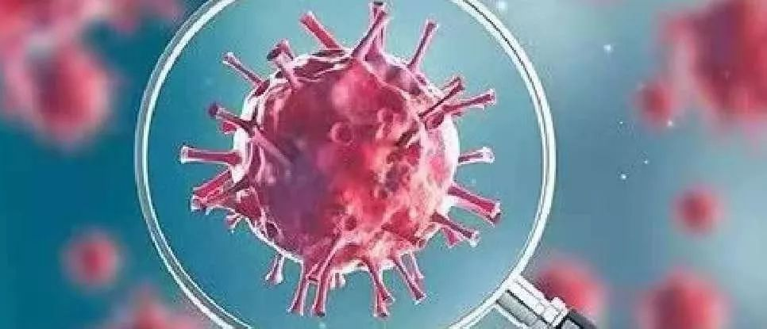

武汉疑似患者受关注 确诊难待解决
原文链接 备份链接 【财新网】（记者 黄姝伦 赵今朝）新型冠状病毒感染肺炎疫情还在爆发式增长，武汉1月23日上午10点宣布交通封城。官方披露，截至1月23日24时，全国确诊病例达850例， 26例死亡绝大部分集中在武汉市，其中河北省出现首 …
27.01.2020
本文字数：3361，阅读时长大约6分钟
导读：自1月6日开始到17日，武汉新冠肺炎12天未报告一例新增病例，并在较长时间内一直强调“未发现明确的人传人的证据”，在相当程度上导致社会各界缺乏警惕、疏于防护。
作者 | 第一财经 陈益刊 马晓华
从12月8日武汉首例新冠（新型冠状病毒感染）肺炎患者发病，到如今近两千人确诊染病（截至1月25日），全国30个省启动重大突发公告卫生事件一级响应，亿万老百姓受此影响。究竟什么原因导致疫情蔓延？
新冠肺炎始于武汉，而在今年1月20日之前，外界获得疫情进展信息的最主要渠道是武汉市卫生健康委员会网站公布的情况通报。
第一财经记者梳理了所有通报发现：12月31日武汉卫健委首次披露27个确诊肺炎病例，随后几天逐步增至59例。但自1月6日开始到17日的几次通报中，病例再无增加，且确诊病例从59例降至41例。直到1月18日的通报才显示，1月16日的确诊病例小幅增加，其后几天开始大幅增加至572例（截至1月24日），其中死亡38例。这一数字还在不断上升。
除此之外，在12月31日、1月3日、5日、11日的四则通报中，武汉市卫健委明确告诉公众“未发现明确的人传人证据，未发现医务人员感染”。随后直至1月20日之前的通报中，又称“密切接触者中，没有发现相关病例”。一直到1月20日晚，国家卫健委高级别专家组组长钟南山院士接受媒体采访时表示，新型冠状病毒出现人传人现象，一些医务人员也被感染。

武汉新冠肺炎12天未报告一例新增病例，并在较长时间内一直强调“未发现明确的人传人的证据”，在相当程度上导致社会各界缺乏警惕、疏于防护。
而在这12天时间里，武汉市和湖北省的两会相继召开。1月6日至10日，武汉市召开两会。1月11日至17日，湖北省召开两会。
事实上不少医院也向武汉市卫健委反映，医院将疑似患者标本送检后，为何几天都没有结果，从而影响确诊？
对此，23日武汉市卫健委答复称，前期对疑似病例的样本检测流程是这样的：首诊医院通过规范的预检分诊、结合临床检查、实验室检查和胸部影像检查，经专家组会诊后确认疑似病例并采样，由辖区疾控中心将样本转运到市疾控中心，市疾控中心转运到省疾控中心进行核酸检测，每天可检测样本200多份。预计从采样开始到结果返回，约需要2天左右的时间。答复同时称，1月16日之前，湖北省没有试剂盒，还需要送到国家指定的检测机构进行病毒分离和核酸检测，结果返回约需要3—5天。
武汉市卫健委称，为适应当前防控形势需要，提高检测速度，经请示上级有关部门同意，从1月22日开始，武汉市已指定各定点救治医院、发热定点诊疗医院的对口帮扶医院以及市疾控中心等具备相应防护级别的生物安全实验室开展相关样本的病原核酸检测工作，预计全部运行起来每天可检测样本近2000份。
专业的回答却无法解释为何连续12天无新增肺炎病例。毕竟从去年12月31日至1月5日几天时间里，尽管也是前期送检流程，确诊病例从27例增至59例。第一财经记者了解到，当时虽然没有诊断试剂，但是实验室核酸检测可以确诊病例。据病毒学专家介绍，一般需48小时。
武汉市卫健委去年12月31日首次告诉公众，“初步调查表明，未发现明确的人传人证据，未发现医务人员感染。”这一口径一直保持到1月14日。

事实上第一财经记者12月31日在武汉华南海鲜市场采访时得知，就有一对夫妻感染新冠肺炎，其中只有丈夫在华南海鲜市场工作。
1月14日在一则新冠肺炎知识问答中，武汉市卫健委称，现有的调查结果表明，尚未发现明确的人传人证据，不能排除有限人传人的可能，但持续人传人的风险较低。且目前确诊的41例病例中，发现一起为家庭聚集性，夫妻两人发病，丈夫先发病，为华南海鲜批发市场从业人员，妻子否认有华南海鲜批发市场暴露史。
自此之后直至1月20日，武汉市卫健委通报中不再提及“未发现明确的人传人证据，未发现医务人员感染。”，取而代之的是对肺炎患者“密切接触者中，没有发现相关病例”。这也传递出人传人可能性很低的信息。
23日武汉市卫健委答问中称，截至1月22日密切接触者出现发热异常症状者46人，排除人数10人，待排人数35人，疑似病例1人。
1月20日晚，随着钟南山表示新冠病毒有人传人现象，有医务人员感染。21日起，国家卫健委开始通报全国新冠肺炎数据，湖北卫健委通报包括武汉在内的全省数据，武汉卫健委不再通报相关数据。
1月24日，国务院办公厅发文征集新型冠状病毒感染的肺炎疫情防控工作问题线索及意见建议，对涉及缓报、瞒报、漏报疫情，落实防控措施不力，导致疫情扩散等严重后果的重要问题线索，国务院办公厅督查室将直接派员进行督查。经查证属实的，将依法依规严肃处理。
25日，中共中央政治局常务委员会召开会议，决定党中央成立应对疫情工作领导小组，在中央政治局常务委员会领导下开展工作。党中央向湖北等疫情严重地区派出指导组，推动有关地方全面加强防控一线工作。此次会议还强调，要及时准确、公开透明发布疫情，回应境内外关切。
国家卫生健康委员会主任马晓伟在26日国新办发布会上表示，目前新冠病毒已经开始在人际进行传播。根据近期的临床资料来看，病毒的传播力似乎有所增强，病毒的毒性和致病力还需要依据更多临床资料进行分析。从现在来看，疫情传播的速度比较快，给防控工作带来了一些挑战和压力。
附武汉卫健委关于新冠肺炎情况通报部分内容
2019年12月8日，武汉市首例感染不明原因的病毒性肺炎的患者发病。此后患有不明原因肺炎病例人数逐步增加。
2019年12月30日，坊间流出一份据称是武汉市卫健委所发的《关于做好不明原因肺炎救治工作的紧急通知》。这份通知显示，武汉市部分医疗机构陆续出现不明原因肺炎病人，要求各有关医疗机构做好医疗救治工作。这份文件在社交媒体上传播，引起民众关注。
12月31日上午，第一财经记者从武汉市证实确有其事，率先作了公开报道。当天下午1点，武汉市卫健委对外正式发布了第一则通报：近期部分医疗机构发现接诊的多例肺炎病例与华南海鲜城有关联，已发现27例病例。上述病例系病毒性肺炎。到目前为止调查未发现明显人传人现象，未发现医务人员感染。
2020年1月1日和2日，武汉市卫健委无病毒性肺炎情况通报。
1月3日，武汉市卫健委通报称，截至当天早上8时，共发现符合不明原因的病毒性肺炎诊断患者44例。初步调查表明，未发现明显的人传人证据，未发现医务人员感染。
1月5日，武汉市卫健委通报称，截至当天早上8时，我市共报告符合不明原因的病毒性肺炎诊断患者59例。初步调查表明，未发现明确的人传人证据，未发现医务人员感染。
1月11日，武汉市卫健委通报称，“不明原因的病毒性肺炎”病原体初步判定为新型冠状病毒。初步诊断有新型冠状病毒感染的肺炎病例41例。自2020年1月3日以来未发现新发病例。目前，未发现医务人员感染，未发现明确的人传人证据。
1月12日，武汉市卫健委称，截至目前，我市累计报告新型冠状病毒感染的肺炎病例41例，无新增新型冠状病毒感染的肺炎病例。密切接触者中，没有发现相关病例。
1月13日，武汉市卫健委称，截至目前我市累计报告新型冠状病毒感染的肺炎病例41例，无新增新型冠状病毒感染的肺炎病例。密切接触者中，没有发现相关病例。
1月14日，武汉市卫健委称，截至目前，我市累计报告新型冠状病毒感染的肺炎病例41例，无新增新型冠状病毒感染的肺炎病例。密切接触者中，没有发现相关病例。
但泰国通报诊断1例来自武汉市的新型冠状病毒感染的肺炎病例。
1月15日，武汉市卫健委称，截至目前，我市累计报告新型冠状病毒感染的肺炎病例41例，无新增新型冠状病毒感染的肺炎病例。密切接触者中，没有发现相关病例。
1月16日，武汉市卫健委称，截至目前，我市累计报告新型冠状病毒感染的肺炎病例41例，无新增新型冠状病毒感染的肺炎病例。密切接触者中，没有发现相关病例。
1月18日凌晨，武汉市卫健委称，截至目前，我市累计报告新型冠状病毒感染的肺炎病例45例，新增4例新型冠状病毒感染的肺炎病例。密切接触者中，没有发现相关病例。
另，泰国、日本各通报诊断1例来自武汉市的新型冠状病毒感染的肺炎病例。
1月19日，武汉市卫健委称，截至1月17日24时，我市累计报告新型冠状病毒感染的肺炎病例62例，17日新增病例17例。密切接触者中，没有发现相关病例
1月20日，截至1月19日22时，我市累计报告新型冠状病毒感染的肺炎病例198例。18日和19日新确诊病例136例。密切接触者中，没有发现相关病例。
1月21日，截至1月20日24时，我市累计报告新型冠状病毒感染的肺炎病例258例，新增病例60例。
由于武汉疫情持续扩散，国家卫健委21日起通报全国新冠肺炎数据。
1月27日，国家卫健委称，截至1月26日24时，国家卫生健康委收到30个省（区、市）累计报告新型冠状病毒感染的肺炎确诊病例2744例，累计死亡病例80例。
【推荐阅读】
UP主实拍：“空城”武汉的物价、交通 、生活状态


原文链接 备份链接 【财新网】（记者 黄姝伦 赵今朝）新型冠状病毒感染肺炎疫情还在爆发式增长，武汉1月23日上午10点宣布交通封城。官方披露，截至1月23日24时，全国确诊病例达850例， 26例死亡绝大部分集中在武汉市，其中河北省出现首 …
原文链接 备份链接 【财新网】（记者 黄蕙昭）一则半夜发布的“封城”通告惊动全国，也拉开武汉肺炎防疫之战新势态。1月23日凌晨两点，武汉市新型冠状病毒感染的肺炎疫情防控指挥部通报宣布，今日10时起，武汉公交、地铁、轮渡、长途客运暂停运 …
原文链接 备份链接 截至1月21日24时，13个省（区、市）累计报告新型肺炎确诊病例440例。 专家认为，1月18日以来确诊病例迅速增加，有疫情由“一代病例”转为“二代病例”的因素。 此次冠状病毒肺炎疫情传播，可明确是二代病例的，迄 …
原文链接 备份链接 截至20日晚上20点，境内累计确诊新型冠状病毒感染肺炎病例218例，疑似病例7例，死亡4例，治愈出院25例。 武汉共有15名医务人员确诊为新型冠状病毒感染的肺炎病例，另有1名为疑似病例。 国家卫健委高级别专家组组 …
原文链接 备份链接 17 年前的那场公共卫生危机，未能及时公开疫情成为事后被诟病最多的问题之一，也成为中国疾病防控系统以及政府信息公开等许多方面的重要转折点。 而多年后，越来越多的互联网官方渠道成为了重大事件的定海神针，「官宣」被普遍接 …